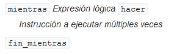

Los lenguajes de programación, en la mayoría de los casos, han sido creados para necesidades específicas; por lo que al momento de seleccionar uno de ellos para nuestros proyectos, es uno de los factores más importantes a tener en cuenta. En consecuencia, los lenguajes de programación pueden ser de propósito general o específico.
El objetivo central de la programación es controlar el computador tanto desde la parte física (hardware) como desde la parte lógica (software); para ello se escriben instrucciones de lenguajes de programación que constituyen órdenes y algoritmos para manipular conjuntos de datos, que en esencia son los programas.
Una instrucción es un conjunto de símbolos que representan una orden para el computador, es decir la ejecución de una operación sobre determinados datos. Estas instrucciones se escriben en un lenguaje de programación, con símbolos tomados de un delimitado conjunto de símbolos léxicos, y que siguen una sintaxis o reglas precisas.
La evolución de los lenguajes de programación ha transcurrido paralela a la evolución de la Electrónica, y más exactamente a componentes electrónicos como los transistores y los circuitos integrados. En general dicha evolución se ha organizado por Generaciones, de las cuales la mayoría de autores coinciden que actualmente son cinco; desde la programación en lenguaje de máquina basado en el sistema numérico binario compuesto de ceros (0) y unos (1), hasta los lenguajes de inteligencia artificial.
Los lenguajes de programación desde el punto de vista de su capacidad de independencia de la parte física o arquitectura computacional, son de bajo nivel o que se comunican directamente con la máquina o la CPU (Unidad Central de Procesamiento); o de alto nivel con procesamiento simbólico independiente de aspectos específicos de la máquina.
Los lenguajes de programación, también se pueden clasificar según el estilo de estructuración y organización de tareas de los programas. A estos modelos de computación se les denomina paradigmas de programación.
Existen básicamente dos paradigmas:
Para entender los elementos básicos y comunes de los Lenguajes de Programación, es necesario entender el concepto de Dato:
como los humanos, el computador tiene que almacenar información para poder realizar los procesos que debe ejecutar.
La parte del computador que realiza esta función es la Memoria Principal o Memoria R.A.M (Random Access Memory).
Dicha memoria está constituida por miles de posiciones o celdas, que consecutivamente pueden guardar datos o valores, e instrucciones.
En esencia las operaciones que se pueden realizar sobre la memoria son lectura y/o escritura.
En la operación de lectura se selecciona una posición de memoria y se lee el valor que contiene, mientras que en la operación de escritura se selecciona la posición y se graba un valor; aún a pesar que tenga grabado otro valor o dato.
Tipos de datos: se agrupan en simples y estructurados. Dentro de los primeros tenemos:
- Numéricos (enteros y reales): consideramos todos los que sean posibles, pero teniendo en cuenta el límite de la capacidad de las posiciones de memoria asignadas.
Los números enteros (Ejemplos: 8, -64, 465) pueden ser positivos o negativos y no tienen componente decimal.
Los números reales (Ejemplos: 0.0005, -4.96, 5.46) pueden ser positivos o negativos y tienen componente decimal.
- Lógicos: sólo pueden ser verdaderos o falsos, se utilizan para determinar los valores lógicos de las condiciones. (Ejemplo: 2 es menor que 1, la respuesta es falsa de manera inequívoca).
- Carácter: son el conjunto finito y ordenado de caracteres que el computador reconoce, y que según la tabla ASCII se compone de todas las letras del alfabeto en mayúsculas y minúsculas, las cifras del 0 al 9 y algunos caracteres especiales.
(Ejemplos: 'd', 'C', '4', '$').
- Cadenas: son conjuntos de caracteres. (Ejemplo: "Software").
Constantes y Variables: durante la ejecución de programas en el computador, hay valores que no cambian y que se identifican como Constantes.
Así mismo existen valores que van cambiando durante la ejecución del software, y que por ello corresponden a Variables.
Estas Variables se identifican con un nombre, y con el tipo de dato que pueden contener; para garantizar su correcto uso y desempeño.
Con los tipos de valores anteriores se pueden llegar a alcanzar soluciones a problemas específicos, pero existen otros que requieren estructuras de datos más complejas conformadas por conjuntos o colecciones de los tipos de datos antes vistos.
Dentro de estas estructuras, podemos encontrar unas sencillas que corresponden con los tipos de datos que contienen:
- Enteras.
- Reales.
- Cadenas.
- Lógicas.
En las estructuras de datos tipo Cadena, se incluye un conjunto de caracteres que se consideran como un elemento simple; tal como el nombre de una persona, la dirección, o el teléfono. (Ejemplos: "Oscar Avila", "Cra 9 No 34-25", "3246835109").
Operadores y Expresiones: corresponden a los elementos que permiten la realización de una operación entre determinados valores. La sintaxis de estas expresiones con operadores será siempre de la siguiente forma:
Expresión1 operador Expresión2
Cada expresión puede ser un solo valor, constante o variable; o una expresión como conjunto de valores relacionados mediante operadores, por lo que es necesario que existan reglas que indiquen en que orden deben efectuarse las operaciones.
Veamos los tipos de operadores más utilizados y su prioridad:
- Operadores aritméticos: la prelación usual de este tipo de operadores es la siguiente, pero sin embargo hay que tener en cuenta el lenguaje de programación particular en que nos encontremos trabajando.
- Operadores Lógicos: corresponde a valores lógicos o que pueden tener sólo dos posibles valores de Verdadero o Falso, y que se muestran en la siguiente tabla con sus posibles combinaciones:

- Operadores cadena: con este operador que concatena o une cadenas de caracteres, se obtiene la unión de las cadenas operandos.
Ejemplo: "saguio" + "wrehgr" da como resultado "saguiowrehgr"
- Operadores relacionales: estos operadores actúan tanto sobre valores numéricos como valores tipo cadena, y su resultado es un valor lógico.
La prelación o relación entre valores numéricos corresponde a la establecida en el sistema de numeración,
cuando trabajamos con cadenas esa relación obedece a la longitud de las cadenas, y a cadenas de igual longitud según el código ASCII correspondiente de cada caracter.
Ejemplos: "eeeee" es mayor que "eee"; "tttt" es igual a "tttt"; "fgh" es mayor que "fff" porque el código ASCII de "g" es mayor que el código ASCII de "f".
ASCII es el acrónimo que corresponde a la expresión inglesa American Standard Code for Information Interchange. Dicha frase puede traducirse como Código Estándar Americano para el Intercambio de Información. Se trata de un patrón de codificación que se emplea en el ámbito de la informática.
- Nivel de prioridad de los operadores: las reglas para evaluar expresiones son:
- Se inicia a evaluar por la izquierda.
- Los paréntesis tienen la mayor prioridad, estos pueden estar anidados y en tal caso se evalúa primero el más interno.
A continuación se muestra el nivel de prioridad de los operadores de mayor a menor, y que obedece a los lenguajes más utilizados; pero que implica que se consulte la bibliografía de cada lenguaje en particular.

Control de flujo: los lenguajes de programación facilitan a los programadores estructuras para controlar el flujo de ejecución de los programas, dependiendo de los datos que deben procesar o transformar.
Independientemente de la complejidad de los algoritmos y del lenguaje de programación en que se implementen, todos se pueden conformar con cuatro estructuras básicas: ejecución secuencial, selección, repetición, e invocación.
- Ejecución secuencial: es el mecanismo de control de flujo básico, que ejecuta las instrucciones en el orden en que las encuentra un programa.
- Selección: se ejecutan instrucciones diferentes dependiendo de la evaluación de una expresión o del valor de una variable. A esas ejecuciones selectivas de instrucciones también se les conoce como ramificaciones, estructuras de decisión o alternativas.
Las estructuras de selección usuales son las de ramificaciones dobles y múltiples.
- Selección doble: se selecciona la instrucción que se debe ejecutar, dependiendo del valor de una variable lógica o de una expresión cuyo resultado es un valor lógico.
- Selección múltiple: se evalúan expresiones que retornan valores de tipos diferentes al tipo de datos lógico. Cada uno de los posibles valores que puede tomar una variable o expresión se conoce como un caso, y para cada caso el programador puede indicar la ejecución de una instrucción diferente.
- Repetición: es la ejecución repetitiva, cíclica o bucle de instrucciones; un número fijo de ocasiones, o hasta que se cumpla un resultado específico al evaluar una expresión.
La repetición permite ejecutar la misma instrucción cero, una o múltiples veces.
Adicional a la instrucción a ejecutar, se tiene una sección de control. Esta sección de control, en conjunto con el cuerpo del ciclo, se encarga de ejecutar tres tareas necesarias para el correcto funcionamiento de la estructura: inicialización (establece un estado que será modificado progresivamente hasta llegar a la condición de terminación), comprobación (compara el estado inicial con el estado final deseado para determinar si se debe finalizar la ejecución del ciclo) y actualización (modifica el estado inicial de forma que avance progresivamente hacia el estado final y permite que eventualmente termine la ejecución).
Hay dos tipos de estructuras principales:
- Ciclos controlados por un contador: se usa cuando se conoce la cantidad de repeticiones que se desea ejecutar o cuando ésta es fija. En este caso se requiere una variable de control de tipo entero, un valor inicial para la variable, un incremento o decremento y una condición que compruebe que la variable de control ha llegado al valor final deseado.
- Ciclos controlados por una condición: el programa evalúa la expresión lógica y si es verdadera, ejecuta la instrucción en el cuerpo del ciclo y regresa a la sección de control para comprobar la condición nuevamente. Este proceso continúa hasta que en algún momento la expresión sea falsa. En ese momento el programa salta a la instrucción que sigue al final del ciclo.

- Invocación: ocurre cuando desde una instrucción se transfiere el control del flujo a otra sección del programa; regresando a la instrucción siguiente a la inicial cuando finaliza la ejecución de la sección que se invocó.
Los lenguajes de programación usualmente definen las estructuras de control de flujo para que procesen una única instrucción en cada sección,
pero los programas requieren la ejecución de varias instrucciones en cada sección o bloque de código.
Estas secciones estan delimitadas, por ejemplo, por llaves {} o por palabras reservadas como inicio y fin.
La visibilidad o alcance de las variables esta delimitada por la sección o bloque en que se encuentren; siendo esto importante para optimizar la organización de los programas, facilitar la detección de errores, y reutilizar nombres de variables en diferentes secciones o bloques del programa.
En el caso de variables con el mismo nombre en diferentes secciones, para los compiladores será visible la de la sección o bloque más interno y las demás no serán visibles.
Variables declaradas en secciones o bloques son locales a aquellos, mientras que las declaradas en el programa principal serán globales.
Estructuras de datos: en esencia son formas de representar información como conjuntos de valores organizados, que se enmarcan dentro de los conceptos de programación independiente de un lenguaje específico. Existen diferentes tipos de estructuras de datos, que podemos crear o que nos las proveen librerías. Las estructuras de datos tienen su propia organización, sus propias reglas y formatos de los datos que contienen; y sus propias operaciones para obtenerlos, incluirlos, borrarlos, y cambiarlos.
La complejidad de las estructuras de datos que utilicemos dependerá de la solución o situación en que las usemos. Existen estructuras de datos estáticas y dinámicas.
- Estructuras de datos estáticas: están conformadas en bloques de memoria contiguamente asignados; como los arrays, matrices, heaps, y hash tables.
Como ejemplo de este tipo de estructuras, veamos las siguientes:
- Arrays: son estructuras de tamaño fijo donde cada elemento tiene un índice o dirección. Las principales ventajas de los arreglos son la rapidez con que podemos localizar un elemento gracias a los índices, son eficientes en el uso del espacio de memoria porque son datos puros, al ser iterados o recorridos y por su fácil localización de memoria redundan en aprovechar la alta velocidad de las actuales memorias caché.
La principal desventaja de los arrays es que no se puede ajustar su tamaño durante la ejecución de un programa. Una solución alternativa para lo anterior es el concepto de arreglos dinámicos, que consiste en duplicar en un nuevo array cada vez que se va llegando al límite del inicial, copiando lo que ya teníamos y agregando los nuevos datos; lo que incrementa la complejidad de la programación pero optimiza el uso de la memoria.
Existen arreglos de múltiples dimensiones, conocidos como matrices o tablas y que tienen tantos índices como dimensiones tenga la estructura; donde podemos ubicar sus elementos como en un plano cartesiano.
- Estructuras de datos dinámicas: están conformadas en distintos fragmentos de memoria, enlazados por punteros como los lists, trees, y graphs; o estructuras contenedoras para grabar y recuperar datos independientemente de su contenido como los stacks y queues (pilas y colas).

Como ejemplo de este tipo de estructuras, veamos las siguientes:
- Linked lists: en las estructuras enlazadas son muy importantes los pointers o punteros, que apuntan a la dirección de memoria donde se encuentra la ubicación de un valor, y mantienen los enlaces entre valores secuenciales que no necesariamente corresponden a posiciones de memoria adyacentes. La estructura será la secuencia de valores enlazados por punteros, llamados nodos. Cuando se guarda un valor se utiliza un espacio adicional donde se guarda la dirección de memoria del siguiente valor.
Las listas tienen un número finito de valores ordenados, que se pueden repetir siendo sin embargo valores distintos. Las características de una lista son: cada nodo contiene uno o más campos que conforman el valor a almacenar, cada nodo contiene al menos un puntero que apunta a otro nodo y si tenemos dos punteros apuntando al nodo anterior y al siguiente es una lista doblemente enlazada, debe haber un puntero apuntando a la cabeza de la estructura para que tenga un comienzo. Las operaciones que se pueden realizar en una linked list son búsqueda, inserción y eliminación de nodos.
- Stack: estas estructuras obedecen a la política de recuperación ordenada de datos last-in, first-out (LIFO); es decir que el último dato en entrar, es el primer dato en salir. Las operaciones que se pueden realizar en un stack son push() para insertar un elemento en el tope de la pila, y pop() retornar y remover el elemento en el tope de la pila.
- Queue: las queue o colas obedecen a la política de recuperación ordenada de datos first-in, first-out (FIFO); es decir que el primer dato en entrar, es el primer dato en salir. Las operaciones que se pueden realizar en una queue son enqueue() para insertar un elemento al final de la cola, y dequeue() para retornar y remover el primer elemento de la cola.
Funciones: conocidas también como métodos o subrutinas, corresponden a bloques de código que realizan tareas específicas, y que nos permiten dividir el trabajo de un programa en tareas independientes pero complementarias al flujo o función principal.
Las funciones se pueden invocar o usar en distintas partes del programa, tanto en la programación estructurada como en la orientada a objetos; y generalmente realizan tareas complejas.
Las siguientes son las características o aspectos principales y generales de las funciones, independiente de la sintaxis de los distintos lenguajes de programación:
- Nombre de la función: es como identificamos la función, generalmente con una palabra concreta que no tenga espacios, que no inicie con números y que no utilice las palabras reservadas del respectivo lenguaje. Ejemplos: areaTriangulo, total_impuestos, AsignacionCoordinador.
- Definición de una función: la sintaxis de la declaración para definir una función es en general de la siguiente forma.
[Modificadores] tipo_retorno nombre_funcion ([argumentos])
{
bloque_código;
}
- Modificadores de una función o método: corresponden a palabras reservadas del lenguaje de programación en que estemos trabajando, que modifican el comportamiento al usar las funciones. Estos modificadores son opcionales, lo cual se indica con corchetes []. Ejemplos: virtual, public.
- Tipo de retorno de un método: es el tipo de valor que devuelve la función, que se puede usar en cualquier parte del programa. Solo se devuelve un valor, de un tipo básico del lenguaje como un booleano, cadena de caracteres; o un objeto en programación orientada a objetos.
- Argumentos o parámetros de una función: se conocen también como parámetros, y son un grupo de variables cuyos valores se envían a la función para que los utilice. Como se vió antes en la definición, son opcionales y por ello hay métodos que no reciben parámetros.
- El bloque de código: corresponde a las instrucciones o sentencias que el método ejecuta, para realizar las tareas para las que fue diseñado. Ese bloque de código se delimita con caracteres como llaves {}, o con palabras como BEGIN y END. A continuación tenemos ejemplos de una función que no recibe argumentos, y otra que si:
public void Pintar ()
{
println("%%%%%");
}
public int Producto (int multip1, int multip2)
{
return multip1 * multip2;
}
- Invocación de funciones, manejo de parámetros y valores retornados: invocar o llamar una función no tiene límite, las funciones se pueden invocar en cualquier orden, en la programación orientada a objetos tanto los métodos llamados y desde donde se llaman pueden estar en la misma clase o en clases distintas; así mismo el orden en que se listan los métodos en una clase no necesariamente es el mismo en el que se definen o implementan.
Las funciones o métodos pueden retornar un valor que se puede usar y/o evaluar como resultado en el método invocante, los argumentos se pasan de un método a otro desde los paréntesis de la invocación al método, los parámetros se pueden pasar de manera literal o como variables, al invocar un método los argumentos se listan en el mismo orden que estan declarados en la definición del método y además deben ser todos, en el proceso de compilación se evalúan los parámetros en cuanto al tipo, cantidad y al orden.
En caso que la función o método retorne un valor, en la declaración se incluye el tipo de valor que retorna antes de su nombre, la devolución de valores en los métodos se hace con sentencias que utilizan palabras reservadas como por ejemplo return. En la mayoría de lenguajes de programación hay un método principal main que recibe uno o más parámetros, y cuyo principal objetivo es poder probar los programas desde línea de comandos.
- Ventajas de los métodos en programación: los objetos interactúan mediante funciones o métodos, es usual que en los programas los objetos se invoquen entre sí mediante sus métodos.
- Facilitan la legibilidad y mantenimiento de los programas, pues con los nombres descriptivos y significativos de los métodos de los programas se identifica lo que hacen.
- Hacen más rápido el desarrollo y mantenimiento de los programas, pues se pueden ir creando y probando funciones para garantizar que la totalidad del programa funcionará bien al terminarlo.
- Hacen que el software sea reutilizable, porque podemos usar cuantas veces queramos o requiramos las funciones o métodos de las clases de las bibliotecas de los distintos compiladores.
- Podemos crear nuestros métodos o funciones, para armar nuestras propias bibliotecas y que otros programadores puedan usarlos por ejemplo en una empresa o grupo de trabajo.
- Métodos y funciones facilitan la separación de los objetos para comunicar y distribuir el trabajo realizado por un programa.